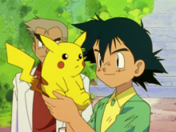
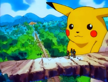
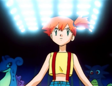
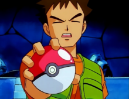

登场角色
小智

《精灵宝可梦》动画全系列主角，年龄约10岁，出身于真新镇，是个朝气蓬勃、热爱宝可梦的少年。在旅途中，通过伙伴宝可梦的帮助，小智逐渐成长，不断磨练自己，挑战道馆，战胜困难前往下一个城镇，最终获得石英大会的参赛权，虽然取得了16强的好成绩，但小智并未就此满足。他继续前往新的地区旅行，与新的宝可梦邂逅，与新的伙伴们并肩作战、共同朝自己的目标前进，接受新的挑战。
皮卡丘

小智宝可梦。拥有比其它皮卡丘更强大的电力，因而成为了火箭队的目标；它不喜欢呆在精灵里，是小智因为领取初始宝可梦时迟到而命运的邂逅。拒绝进化，深信不进化也能战胜自己的进化型——雷丘。
小霞

《精灵宝可梦无印篇》主角，年龄约10岁，自称是世界级美少女、俏皮的美人鱼、华蓝美女四姐妹之一，现任华蓝道馆训练家。喜欢水系宝可梦，立志成为水系宝可梦大师。因对她的姐姐生腻而外出旅行，来追求成为世界最伟大的水系训练家。当她在真新镇和常磐市之间的河边钓鱼时，她偶遇小智，于是就这样结伴旅行。
小刚

《精灵宝可梦无印篇》至《精灵宝可梦DP》主角，曾是尼比市的道馆训练家。他与小智打完道场赛后次与小智一起旅行。从尼比市出发时，目标是宝可梦饲育家。他很擅长家务和料理，而且比其他人更宝可梦的知识。小刚很迷恋年龄比他大的大姐姐，不过每次都被拒绝，经常会在求爱的时候被小霞揪着耳朵拖走。在神奥联盟后的一次事件令他改变志向，令他立志成为宝可梦医生。